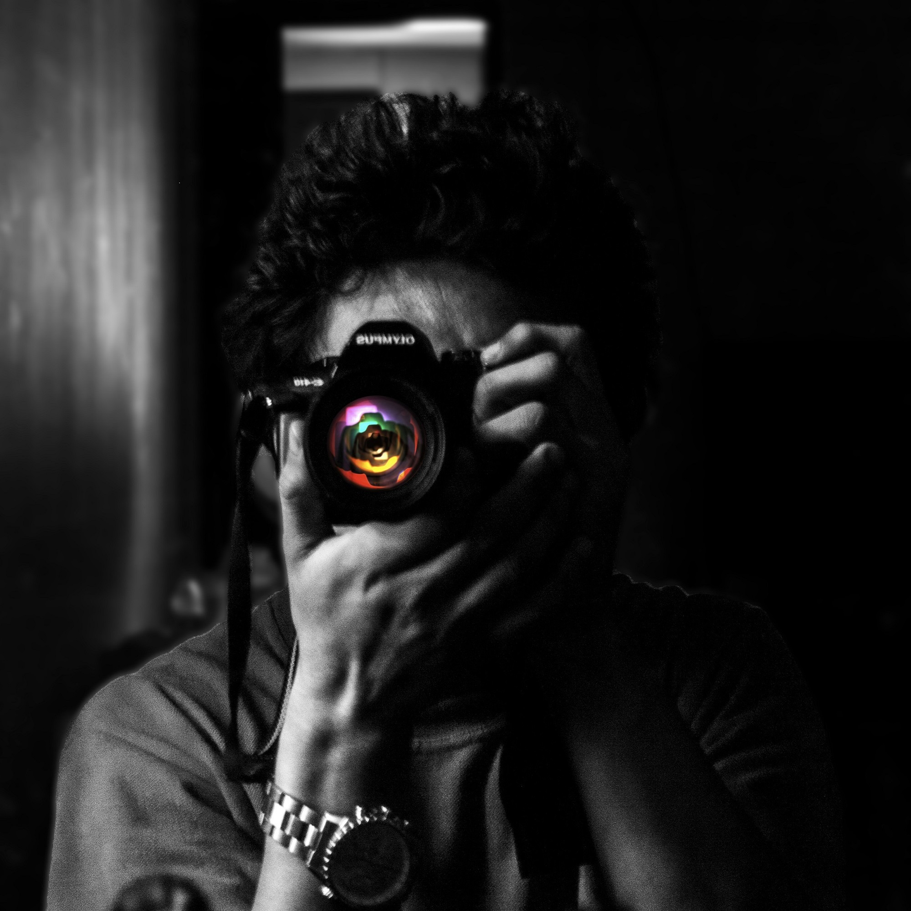

About Me
I grew up in Kathmandu, Nepal. I am a freelance photographer who absolutely loves his job and everything comes with it. I appreciate people I meet, the places and the hours I keep. It takes a great pride in capturing the true spirit and personality of the people and the subjects that I photography. My styles has been described as creative, fun, engaging and relaxed.
I understand that in order for me to capture beautiful images I must create a relaxed environment. Beauty can be seen in all things, seeing and composing the beauty is what separates the snapshot from the photograph. For me, 'Photography is an art'. Eyes is the powerful source in photography and I also accomplish this by engaging in conversations, listening with my ears and camera, paying close attension to every small details. I live by the quote, "Great art is produced by only those who have great eyes."
I specialize in portraits, weddings, lifestyle, fashion, product and event photography. I've successfully achieved my dream. I look forward to meeting you and discuss your photography needs.